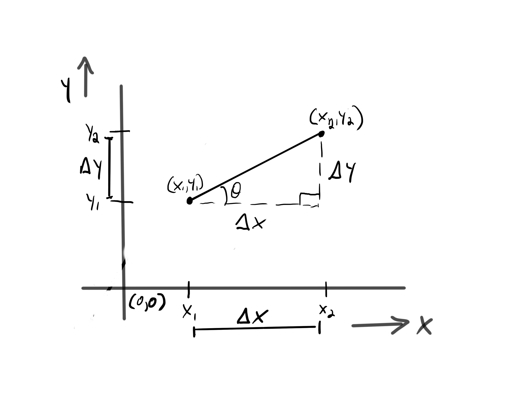

>>#+OPTIONS: toc:3
Bressenham and DDA
There are two popular Line Drawing Algorithms. Bresenham and DDA. Bresenham is a more efficient algorithm because it doesn't require any division of floating point numbers which is a much more costly operation than Simple addition.. DDA is a easier to understand and reason about.
DDA line drawing Algorithm - Digital Differential Analyzer
What is a line ?
A line is an infinite n dimension, it is length with no breadth, It has only one dimension which is its length. For comaparison sake lets look at 2 other objects. A Surface has two dimensions it's length and breadth. A solid is defined with three dimensions, length, breadth and width. Lines are an abstract concept they do not exist in actual 3 dimensional space. Even if we draw a line and zoom in it will always have some width (breadth).
Figure 1: A line is an infinite n dimension in a 2 dimensional coordinate system.
What is a line segment?
A portion of a line lying between, or confined between, 2 points. When we speak about lines we are usually referring to line segments. Furthermore, we find for our purposes a line segment is a collection of points over a path. That path is defined by an equation y = mx + c.
Figure 2: A line segment is a portion of a line bound by 2 points (x1, y1) and (x2, y2)
Figure 3: A line segment as a collection of points along a path.
The line equation
We refine our definition of a line to be a collection of points over a path, where the path is defined by the equation y = mx + c and the collection of points are bound on the extremes by two points (x1, y1) and (x2, y2). In the equation:
- y = mx + c
- m is the slope of the line path
- c is the intersecting point, the y-intercept, of the line path and the y axis.
- The x-intercept is where the line path intersects the x axis.
If you know the slope and the y intercept of a line, you can find any point on that line.
Slope of a line
The slope is a ratio between the change in y with respect to the change in x.
- m = Δy / Δx
- rise / run
- y2 - y1 / x2 - x1
- m = tan(θ)
- opposite / adjacent

Figure 4: The slope of a line is the ratio of the change in y to the change in x.
Figure 5: (θ < 45° : m < 1) (θ > 45° : m > 1) (θ = 45° : m = 1)
The Algorithm
Goal is to generate a set of points to form as line between 2 points.
- Takes 2 points.
Determin Δ values for x and y
int delta_x = x1 - x0;
int delta_y = y1 - y0;
Determine number of steps
int steps = abs(delta_x) >= abs (delta_y) ? abs(delta_x) : (delta_y);
Determine X and Y incements
X increment = Δx / steps
Y increment = Δy / steps
float x_inc = delta_x / (float)steps;
float y_inc = delta_y / (float)steps;
Generate Points
for (i = 0; i <= Steps ; i++)
drawpixles(x1,y1);
x1 += x_inc;
y1 += y_inc;
Examples
When the Slope is 0, the line is horizontal.
(x1, y1) = (2, 2)
(x2, y2) = (9, 2)
Δx = 9 - 2 = 7
Δy = 2 - 2 = 0
M = ΔY/Δx = 0/7 = 0, Slope = 0
largest Δ = Δx = 7 (this is the number of steps)
xinc = Δx / steps = 7/7 = 1
yinc = Δy / steps = 0/7 = 0
Determine the set of points.
| x | y |
|---|---|
| 2 | 2 |
| 3 | 2 |
| 4 | 2 |
| 5 | 2 |
| 6 | 2 |
| 7 | 2 |
| 8 | 2 |
| 9 | 2 |
When the Slope is infiniti, the line is vertical
(x1, y1) = (2, 5)
(x2, y2) = (2, 12)
Δx = 2 - 2 = 0
Δy = 12 - 5 = 7
M = ΔY/Δx = 7/0 = infiniti
largest Δ = Δy = 7 (this is the number of steps)
xinc = Δx / steps = 0/7 = 0
yinc = Δy / steps = 7/7 = 1
Determine the set of points.
| x | y |
|---|---|
| 2 | 5 |
| 2 | 6 |
| 2 | 7 |
| 2 | 8 |
| 2 | 9 |
| 2 | 10 |
| 2 | 11 |
| 2 | 12 |
When the Slope is < 1, Δy > Δx
(x1, y1) = (5, 4)
(x2, y2) = (12, 7)
Δx = 12 - 5 = 7
Δy = 7 - 4 = 3
M = ΔY/Δx = 3/7 < 1
largest Δ = Δx = 7 (this is the number of steps)
xinc = Δx / steps = 7/7 = 1
yinc = Δy / steps = 3/7 = .4
Determine the set of points m < 1
| x | y | round(y) |
|---|---|---|
| 5 | 4 | 4 |
| 6 | 4.4 | 4 |
| 7 | 4.8 | 5 |
| 8 | 5.2 | 5 |
| 9 | 5.6 | 6 |
| 10 | 6 | 6 |
| 11 | 6.4 | 6 |
| 12 | 6.8 | 7 |
When Slope is > 1, Δy < Δx
(x1, y1) = (5, 7) (x2, y2) = (10, 15) Δx = 10 - 5 = 5 Δy = 15 - 7 = 8 M = ΔY/Δx = 8/5 > 1 largest Δ = Δy = 8 (number of steps) xinc = Δx / steps = 5/8 = .6 yinc = Δy / steps = 8/8 = 1 #+endverse
Determine the set of points m > 1
| round(y) | x | y |
|---|---|---|
| 5 | 5 | 7 |
| 6 | 5.6 | 8 |
| 6 | 6.2 | 9 |
| 7 | 6.8 | 10 |
| 7 | 7.4 | 11 |
| 8 | 8 | 12 |
| 9 | 8.6 | 13 |
| 9 | 9.2 | 14 |
| 10 | 9.8 | 15 |
When the Slope is = 1, Δy = Δx
(x1, y1) = (12, 9)
(x2, y2) = (17, 14)
Δx = 10 - 5 = 5
Δy = 15 - 7 = 5
M = ΔY/Δx = 5/5 = 1
largest Δ = 5 (number of steps)
xinc = Δx / steps = 5/5 = 1
yinc = Δy / steps = 5/5 = 1
| x | y |
|---|---|
| 12 | 9 |
| 13 | 10 |
| 14 | 11 |
| 15 | 12 |
| 16 | 13 |
| 17 | 14 |